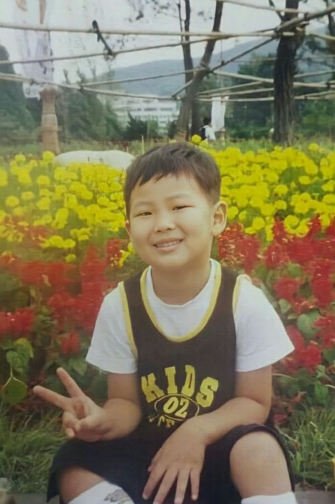
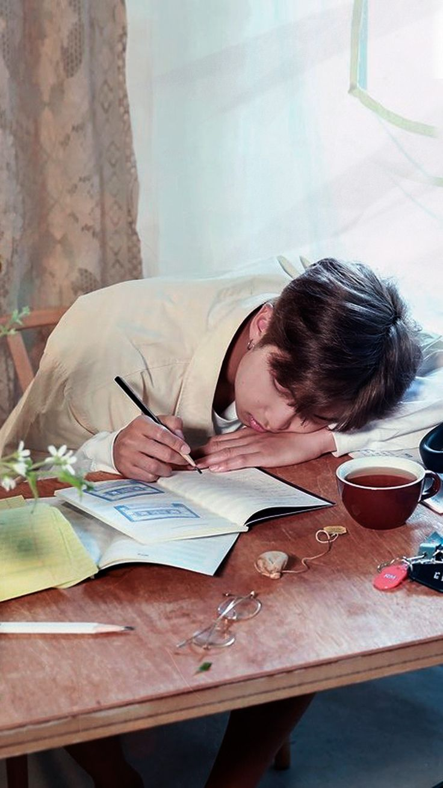
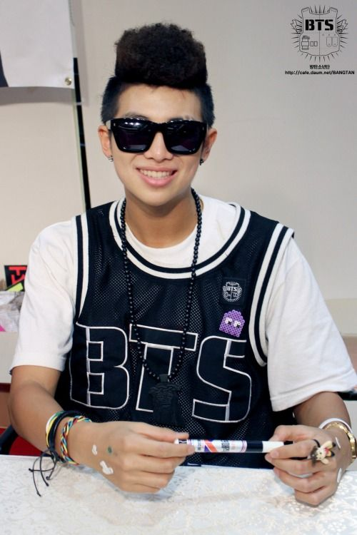

The Beginning
The boy from Ilsan.
A quiet childhood, a loud imagination.
He grew up in Ilsan, a city just north of Seoul, in a home full of books and ordinary evenings. He read voraciously — poetry, philosophy, translations he barely understood at first, then understood entirely too well.
His parents kept his notebooks. Later, so did we.

The dream of language.
Long before the stage, there was the page. He filled notebooks with English words he was learning from sitcoms, dictionaries, and radio, translating the world into himself and himself into the world.
He wanted to be understood — and, quietly, to understand.

The first microphone.
The first rhymes came in secret, then not-so-secret, then loudly, then everywhere. Underground rap circles, cyphers, and the friends who believed in him before anyone else did.
He was nineteen when he chose. He is still choosing.
